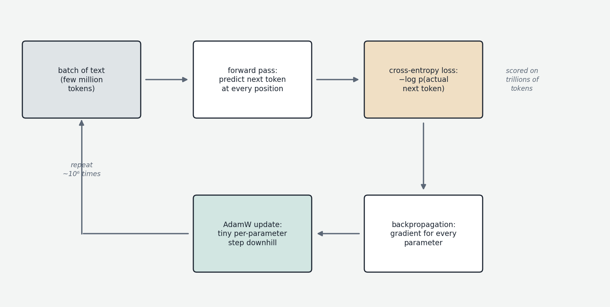
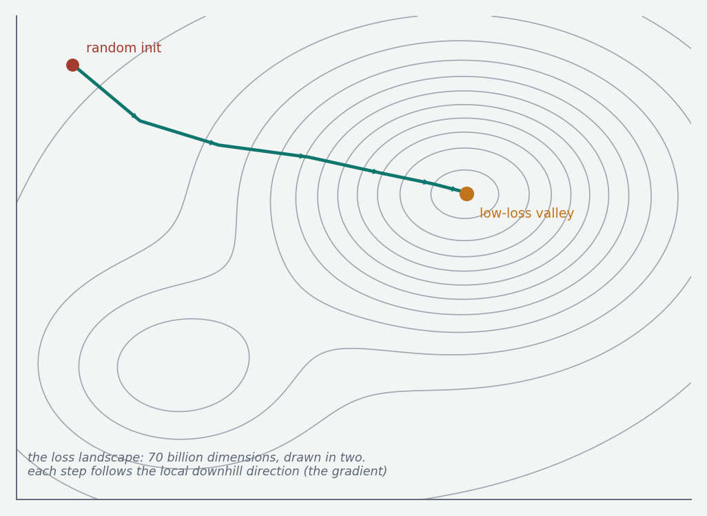

Every explanation of the forward pass so far has leaned on the same phrase: "this matrix is learned during training." The embedding table starts as random noise and ends up placing "cat" near "dog". The query and key matrices somehow come to encode useful questions and advertisements. The MLP matrices end up storing factual associations. This chapter explains what that learning actually is, mechanically. It is one idea — adjust the numbers slightly, millions of times, in whichever direction reduces prediction error — but the machinery around that idea deserves careful unpacking.

The setup: a model is a function with knobs
Strip away all the architectural detail and a language model is a single enormous mathematical function. It takes a sequence of token IDs as input, and it produces a probability distribution over the vocabulary as output. The function's behavior is controlled by its parameters — every entry of every matrix we have discussed: the embedding table, the query/key/value projections in every layer, the MLP matrices, the normalization scales, the output projection. A 70-billion-parameter model is a function with 70 billion adjustable knobs. Before training, every knob is set to a small random value, and the function's output is meaningless — the probability distribution over next tokens is essentially uniform noise. Training is the process of finding settings for all 70 billion knobs simultaneously such that the function's predictions become good.
The phrase "finding settings" undersells the difficulty. You cannot search 70 billion dimensions by trial and error; the space is unimaginably vast. What makes training possible is that we can compute, efficiently and exactly, the direction in which each knob should move to improve the predictions — and then take a tiny step in that direction, and repeat.
The objective: next-token prediction and cross-entropy loss
First we need a precise definition of "good predictions." The pretraining objective is next-token prediction: given the tokens so far, predict the next one. The training data — trillions of tokens of real text — provides an endless supply of question-and-answer pairs for free, because in any real document the correct next token is simply whatever token actually came next. No human labeling is required; the text labels itself. This is why the paradigm is called self-supervised learning.
The measure of prediction quality is the cross-entropy loss. After a forward pass, the model has produced a probability distribution over the vocabulary at some position. We look up the probability the model assigned to the token that actually came next in the training text, and take the negative logarithm of that probability. That single number is the loss for that position.
Why the negative logarithm rather than something simpler? Two reasons. First, the logarithm turns multiplication into addition: the probability of a whole document is the product of the per-token probabilities, and maximizing a product of thousands of small numbers is numerically and mathematically awkward, whereas maximizing the sum of their logarithms is clean. Second, the logarithm penalizes confident mistakes brutally. If the model assigns probability 0.5 to the correct token, the loss is about 0.69. If it assigns 0.01, the loss is 4.6. If it assigns 0.0001, the loss is 9.2. Being confidently wrong costs far more than being uncertain, which is exactly the incentive structure you want. A related quantity you will see constantly is perplexity, which is just the exponential of the average loss — interpretable as "the model is as uncertain as if it were choosing uniformly among this many options." A perplexity of 8 means the model's uncertainty is equivalent to an eight-way coin flip per token.
One elegant efficiency follows from causal masking. Because each position in the sequence only attends to earlier positions, a single forward pass over a 4,096-token training sequence produces 4,096 independent predictions simultaneously — position 1 predicts token 2, position 2 predicts token 3, and so on. Every token in the corpus is a training example, and they are all processed in parallel. The loss for the sequence is the average of the per-position losses.
Gradients: which way to turn each knob
Now the central question: given a loss value, how do we know which way to adjust each of the 70 billion parameters? The answer is the gradient.

Recall the basic notion of a derivative: for a function of one variable, the derivative at a point tells you how much the output changes per tiny change of the input — the slope. The gradient generalizes this to functions of many variables: it is the list of all the partial derivatives, one per parameter. For our purposes, the gradient of the loss is a list of 70 billion numbers, one per parameter, where each number answers the question: "if I nudged this particular parameter up by a tiny amount, how much would the loss change?" A positive entry means increasing that parameter increases the loss (so we should decrease it); a negative entry means increasing it decreases the loss (so we should increase it); a near-zero entry means this parameter currently doesn't matter much.
The gradient points in the direction of steepest increase of the loss, so we step in the opposite direction. This is gradient descent: compute the gradient, move every parameter a small step against it, repeat. The size of the step is controlled by a single scalar called the learning rate — too large and you overshoot and the loss oscillates or explodes; too small and training takes forever. The standard mental image is a hiker descending a foggy mountain landscape: at each point you can feel the local slope under your feet (the gradient) but cannot see the valley, so you repeatedly take small steps downhill. The "landscape" here is 70-billion-dimensional, and remarkably, for neural networks it turns out to be navigable — there are many good valleys and gradient descent reliably finds one. Why such a high-dimensional non-convex landscape is so forgiving is a genuinely deep question that is only partially understood; empirically, it works.
Backpropagation: computing the gradient efficiently
Computing 70 billion partial derivatives sounds like it should require 70 billion separate computations. The algorithm that makes it tractable is backpropagation, and it is the single most important algorithm in deep learning.
The key insight is that the loss is computed by a long chain of simple operations — matrix multiplications, additions, element-wise nonlinearities — each feeding into the next. The chain rule from calculus says that the derivative of a composition of functions is the product of the derivatives of the pieces. Backpropagation applies the chain rule systematically and in reverse: start at the loss (whose derivative with respect to itself is 1), and walk backward through the computation graph, at each step computing the derivative of the loss with respect to that step's inputs, given the already-computed derivative with respect to its outputs. Each operation in the forward pass has a corresponding cheap backward rule, and by the time you have walked back to the bottom of the network, you have the derivative of the loss with respect to every parameter — all of them, exactly, in roughly twice the compute of the forward pass itself.
Two practical consequences are worth knowing. First, the backward pass needs the intermediate values from the forward pass (the activations — the value of the residual stream and the intermediate MLP outputs at every layer), so they must be kept in memory between the forward and backward passes. This is why training takes far more memory than inference, and why a trick called activation checkpointing exists: store only some activations and recompute the rest during the backward pass, trading compute for memory. Second, this is where the vanishing and exploding gradient problems discussed in the residual-connections chapter actually live: the backward pass multiplies derivative factors layer after layer, and residual connections are what keep that product from collapsing to zero or blowing up.
Stochastic gradient descent and batches
Computing the gradient over the entire training corpus before taking one step would be absurd — trillions of tokens per step. Instead, the gradient is estimated from a small random sample of the data called a batch (or minibatch). The estimate is noisy, but it points roughly the right way, and you can take thousands of cheap noisy steps in the time one exact step would cost. This is stochastic gradient descent (SGD), and the noise turns out to be not just tolerable but arguably helpful — it provides a kind of jitter that helps the optimization escape bad regions.
In large-scale language model training, batches are huge in absolute terms — often several million tokens per step — because the gradient noise must be kept manageable when the learning signal per token is small. A full training run is then a few hundred thousand to a few million steps. One important difference from classical machine learning: traditional training loops over the dataset many times (each full pass is called an epoch), but LLM pretraining corpora are so large that models typically see most of the data only once, or close to it. There is more text available than compute to learn from it — repetition of data is generally avoided because it promotes memorization over generalization.
Optimizers: Adam and friends
Plain SGD — step against the raw gradient, scaled by the learning rate — works but is crude, because different parameters live at wildly different scales and receive gradients of wildly different magnitudes. Modern training universally uses Adam (Adaptive Moment Estimation) or its variant AdamW.
Adam maintains two running averages per parameter: an exponentially decaying average of recent gradients (the first moment — essentially momentum, smoothing out the step direction over time, like a heavy ball rolling downhill rather than a hiker reacting to every pebble) and an exponentially decaying average of recent squared gradients (the second moment — a per-parameter estimate of how large this parameter's gradients typically are). Each parameter's step is the momentum-smoothed gradient divided by the square root of its typical magnitude. The effect is that every parameter gets a step size adapted to its own scale: parameters with consistently huge gradients get damped, parameters with tiny gradients get amplified. AdamW adds weight decay — a gentle constant pull of all parameters toward zero, which acts as regularization — implemented in a mathematically cleaner ("decoupled") way than the original Adam.
The cost of Adam is memory: those two running averages are each the same size as the parameters themselves. Training state per parameter, in standard mixed-precision practice, is roughly: the working 16-bit copy of the weight, a 32-bit master copy, the 32-bit gradient, and two 32-bit Adam moments — around 16 bytes per parameter all-in. A 70B model therefore needs on the order of a terabyte of memory just for training state, before activations. This is the arithmetic that forces large-scale training onto clusters, which is the subject of the next chapter.
A few remaining pieces of standard practice complete the picture. The learning rate schedule matters: training begins with a warmup phase where the learning rate ramps up from zero over the first few thousand steps (large steps on a randomly initialized network are destructive), then decays — classically along a cosine curve — toward a small final value as training converges. Gradient clipping caps the overall magnitude of the gradient each step, protecting against occasional pathological batches that would otherwise cause a destructive jump; even so, large training runs exhibit occasional loss spikes that teams monitor and sometimes recover from by rewinding to a checkpoint and skipping the offending data. And computation runs in mixed precision: forward and backward passes in a 16-bit format (BF16, discussed properly in Chapter 6) for speed, with 32-bit master weights to accumulate the tiny updates accurately.
The picture to keep
Training is not mysterious in mechanism, only in consequence. A randomly initialized function is shown a few million tokens of text; for each, it predicts the next token and is scored by how much probability it placed on the truth; backpropagation computes exactly how every one of its billions of parameters contributed to the error; Adam nudges every parameter a tiny, individually-scaled step in the improving direction; and this loop repeats on the order of a million times. No single step accomplishes anything visible. The astonishing fact of the field is that this purely local, purely incremental procedure, applied at sufficient scale to the objective "predict the next token," produces systems that translate languages, write code, and carry on this conversation. What "sufficient scale" means — and how predictable the outcome is — is the subject of Chapter 2.